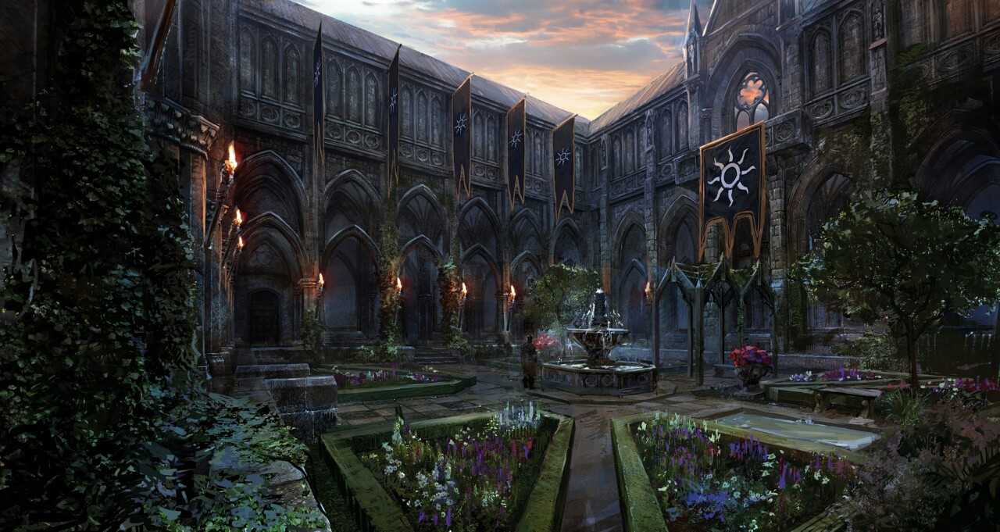

Этот сайт захвачен нильфгаардской империей!
Правила:
1.Исполнять все разпоряжения сотников и офицеров.2.Отдавать дань для обеспечения армии еженедельно.
3.Почитать и восславлять великое солнце.

История империи Нильфгаард
Империя Нильфгаард — одна из самых сильных империй в истории мира. Находится в южной части континента и может похвастаться процветающей экономикой и мощной, хорошо подготовленной армией с талантливыми командирами.
Империя расширилась в основном за счет захвата зарубежных стран, которые позже стали провинциями империи. Имперские жители верят, что «настоящие» Нильфгаардцы только те, кто родился в сердце Империи, а не в захваченных провинциях. Собственно в империи Нильфгаардом называют только земли, лежащие в окрестностях столицы в нижнем течении реки Альбы.
Провинциями управляют или префекты или короли (в случаях, где король отдал страну империи, сохранив свой трон, но теперь подчиняясь Императору). Империя расширялась годами, завоевывая новые земли и двигаясь как можно дальше на север до реки Яруга во время правления своего императора, Эмгыра вар Эмрейса.